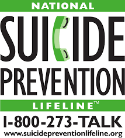

Suicide is the manner of death in which a person takes their own life. A suicide attempt is the intention of ending one's own life, but they were unable to die after trying to carry out their plan. This may result in causing bodily harm to themselves rather than death. There are many factors why a person may choose to suicide. For example, experiencing violence, such as child abuse, bullying, sexual assault, domestic violence or mental disorders. Suicide occurs to all age, economic, social, racial and ethnic boundaries.
